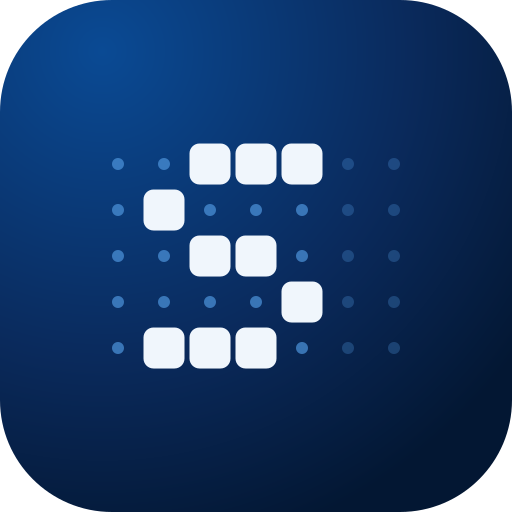

<!doctype html>
<meta charset="utf-8">
<!-- Cornice per gli screenshot del README, usata da screenshots.mjs: frame('light'|'dark', schermata e larghezza del desktop, schermata e larghezza del telefono) -->
<style>
  html, body { margin: 0; background: transparent; font-family: system-ui, sans-serif; }
  #f { display: inline-block; padding: 32px 40px 56px; }
  img { display: block; }

  /* finestra di un browser generico in stile Chrome: schede in alto, poi barra con frecce, indirizzo e menu */
  .browser { border-radius: 12px; overflow: hidden; box-shadow: 0 0 0 1px var(--edge), 0 28px 60px -24px rgb(0 0 0 / .5); color: var(--text); }
  .tabs { height: 38px; display: flex; align-items: flex-end; padding: 0 10px; background: var(--strip); }
  .tab { width: 230px; height: 30px; display: flex; align-items: center; gap: 8px; padding: 0 10px 0 12px; border-radius: 10px 10px 0 0;
    background: var(--bar); font-size: 12.5px; color: var(--strong); }
  .tab img { width: 16px; height: 16px; border-radius: 3px; }
  .tab span { flex: 1; }
  .win { margin-left: auto; align-self: center; display: flex; gap: 26px; padding-right: 8px; }
  .tool { height: 42px; display: flex; align-items: center; gap: 18px; padding: 0 16px; background: var(--bar); }
  .url { flex: 1; height: 30px; border-radius: 15px; background: var(--pill); display: flex; align-items: center; gap: 10px;
    padding: 0 14px; font-size: 13.5px; color: var(--strong); }
  svg { flex: none; }
  .light { --strip: #dfe5ee; --bar: #fff; --pill: #eef2f7; --text: #5b6b85; --strong: #1f2a3d; --edge: rgb(0 20 60 / .14); }
  .dark { --strip: #070e1c; --bar: #13203a; --pill: #0a1427; --text: #8fa1bf; --strong: #dbe5f5; --edge: rgb(255 255 255 / .1); }

  /* telefono Android generico: cornice sottile, foro della fotocamera, tasti sul lato destro */
  .phone { position: relative; padding: 12px; border-radius: 58px; background: #111214;
    box-shadow: inset 0 0 0 2px #2e2f33, 0 0 0 1.5px #4a4b50, 0 34px 70px -26px rgb(0 0 0 / .55); }
  /* schermo: sopra la barra di stato nel colore theme-color del tema scuro (come Chrome su Android), sotto la pagina, tagliata in fondo */
  .screen { width: 390px; height: 844px; padding-top: 44px; box-sizing: border-box; border-radius: 46px; overflow: hidden; background: #010b1a; }
  .btn { position: absolute; right: -4px; width: 4px; border-radius: 0 3px 3px 0; background: #3a3b40; }
  .hole { position: absolute; top: 26px; left: 50%; width: 16px; height: 16px; translate: -50% 0; border-radius: 50%;
    background: #000; box-shadow: 0 0 0 1.5px #1c1d21; }
  .status { position: absolute; top: 12px; left: 12px; right: 12px; height: 44px; padding: 0 30px; display: flex;
    align-items: center; justify-content: space-between; color: #fff; font-size: 14px; font-weight: 600; }
  /* tema chiaro: barra di stato nel theme-color chiaro, testo scuro */
  .phone.light .screen { background: #f0f6fc; }
  .phone.light .status { color: #1f2a3d; }

  /* telefono rimpicciolito sopra l'angolo in basso a destra della finestra */
  .combo { position: relative; padding: 0 150px 70px 0; }
  .combo .phone { position: absolute; right: 0; bottom: 0; zoom: .75; }
  .right { display: flex; align-items: center; gap: 6px; } /* batteria al 67%: piccolo easter egg */
</style>
<div id="f"></div>
<script>
  // icona a tratto 16×16 (frecce, ricarica, finestra)
  const icon = (d, size = 16) => `<svg width="${size}" height="${size}" viewBox="0 0 16 16" fill="none" stroke="currentColor" stroke-width="1.5" stroke-linecap="round" stroke-linejoin="round"><path d="${d}"/></svg>`;
  // Disegna la cornice attorno all'immagine e aspetta che sia caricata
  const phone = (theme, img) => `<div class="phone ${theme}"><div class="screen">${img}</div><div class="btn" style="top:170px;height:64px"></div><div class="btn" style="top:260px;height:112px"></div>
      <div class="hole"></div><div class="status"><span>10:00</span>
      <span class="right"><svg width="16" height="14" viewBox="0 0 16 14" fill="currentColor"><path d="M1 12h2v-2H1zM5 12h2V8H5zM9 12h2V5H9zM13 12h2V2h-2z"/></svg>
      <svg width="18" height="14" viewBox="0 0 18 14" fill="currentColor"><rect x=".5" y="2.5" width="15" height="9" rx="2" fill="none" stroke="currentColor"/><rect x="2" y="4" width="8" height="6" rx="1"/><rect x="16" y="5" width="1.6" height="4" rx=".8"/></svg>67%</span></div></div>`;
  const browser = (theme, img) => `<div class="browser ${theme}">
      <div class="tabs"><div class="tab"><span>Smart Move</span>${icon('M4 4l8 8M12 4l-8 8', 12)}</div>
        <div class="win">${icon('M3 8h10')}${icon('M3.5 3.5h9v9h-9z')}${icon('M3.5 3.5l9 9M12.5 3.5l-9 9')}</div></div>
      <div class="tool">${icon('M13 8H3M7 4L3 8l4 4')}${icon('M3 8h10M9 4l4 4-4 4')}${icon('M13 8a5 5 0 1 1-1.5-3.5M13 2.5V5h-2.5')}
        <div class="url">${icon('M2 5h7M2 11h5M12 5h2M10 11h4M9 3.5v3M7 9.5v3', 14)}smart-move.it</div>
        <svg width="16" height="16" viewBox="0 0 16 16" fill="currentColor"><circle cx="8" cy="3.5" r="1.4"/><circle cx="8" cy="8" r="1.4"/><circle cx="8" cy="12.5" r="1.4"/></svg></div>
      ${img}</div>`;
  // Disegna browser e telefono attorno alle due schermate e aspetta che siano caricate
  window.frame = (theme, src, w, src2, w2) => {
    const img = (s, w) => ``;
    f.innerHTML = `<div class="combo">${browser(theme, img(src, w))}${phone(theme, img(src2, w2))}</div>`;
    return Promise.all([...f.querySelectorAll('img')].map(i => i.decode()));
  };
</script>
